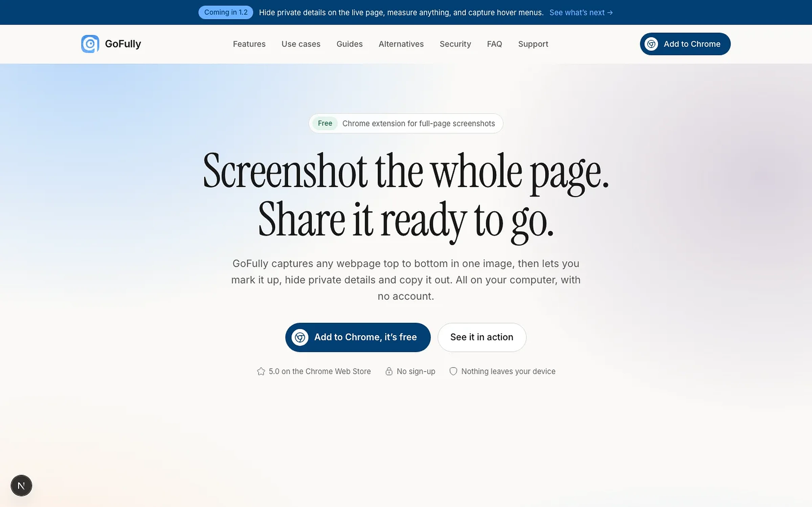
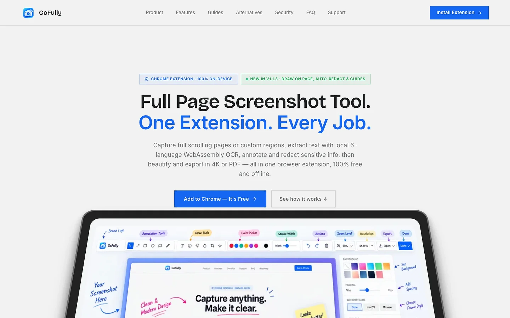

GoFully: redesigning a screenshot extension around one promise, nothing leaves your device.
GoFully could capture, read, mark up, redact and export a whole page, all offline, but it looked like every other screenshot tool. I redesigned the brand, the extension and the website so that promise is the first thing people see.
A capable offline screenshot tool listed every feature at once, so its one real difference, privacy, got lost.
One promise across every surface: capture the whole page and keep it on your device. A new symbol, a calm design system and a site that shows the product.
Brand strategy and identity, design system, every extension and editor screen, and the website design.
Sharing one page takes a chain of apps.
The best thing about GoFully was the quietest thing on the page.


Brand to website, end to end.
Private, precise, fast.
A viewfinder drawn as a G
It still reads as “screenshot”, and it can only be GoFully. Below 32 px the wordmark drops and the symbol stands alone.
Soft corners, a 4 px grid and two quiet shadows
Radius by role, navy shadows instead of black, one icon weight. Every component in four states.
One primary action per screen, and a way out of every error.
Every capture mode, with its shortcut
When a capture fails, the popup says what happened and what to do next.
The whole page, in one image
It scrolls, waits for lazy images and stops sticky headers repeating.
Hide what shouldn’t be seen, before you share
Emails, card numbers and API keys are covered automatically.
Copy text out of any image
Six languages, read on the device.
Everything after the capture, in one quiet window
Crop, arrows, text, blur and Beautify, in light and dark.
Copy, save, edit or pin
After a capture, a small card appears on top of any site.
I replaced the feature list with one sentence.
Old: “Full Page Screenshot Tool. One Extension. Every Job.” New: “The screenshot studio that stays on your device.”
Each feature plays on a real page
Pick a demo or let them run.
Four tools, or one
What people usually pay for, set against one free extension.
What GoFully taught me.
Lead with the difference
Privacy moved from a badge to the headline, because it was the one thing competitors couldn’t say.
Design the failures too
Every error state got a next step, so people don’t get stuck.
One look everywhere
Icon, popup, editor and website now share one system and one message.
No post-launch metrics yet. The new website is live. This shows the design work, not results.